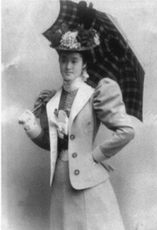
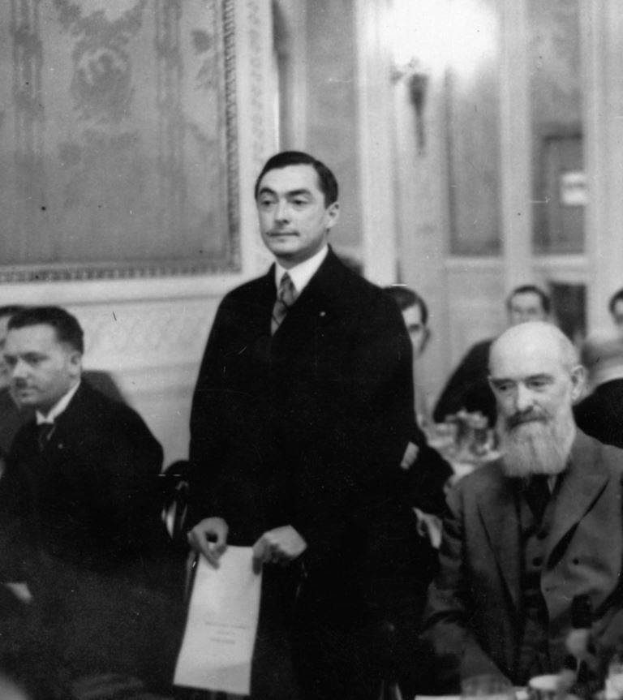
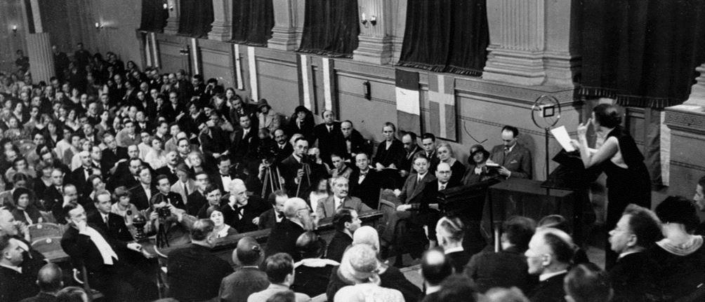
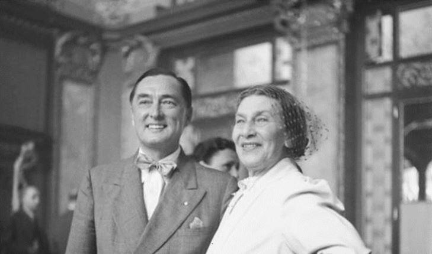
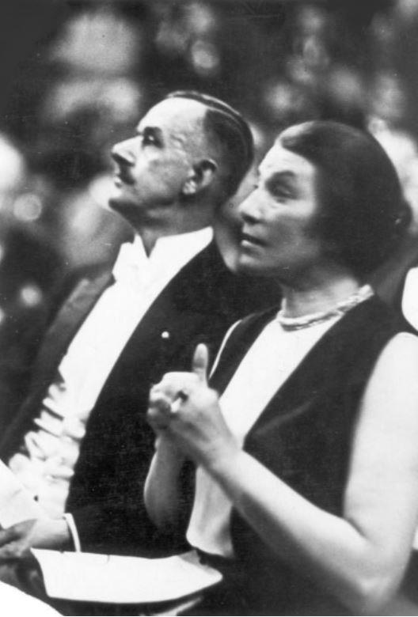
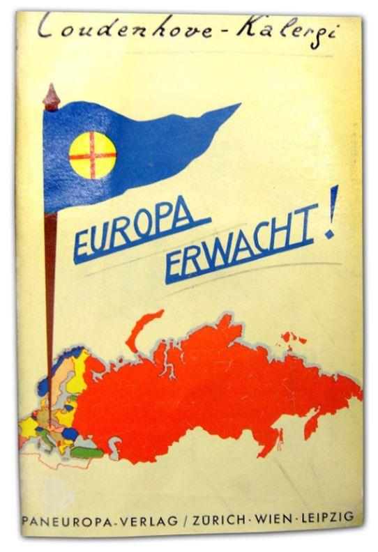
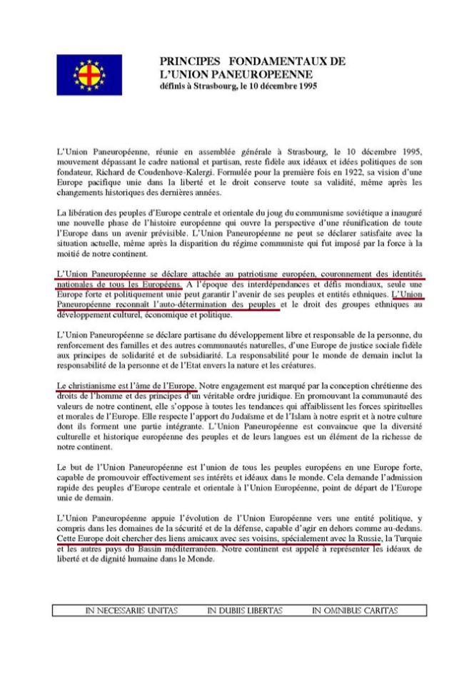

Peu de personnes connaissent le mouvement paneuropéen et parmi ceux qui le connaissent au moins de nom, nombreuses sont les critiques envers notamment son fondateur, qui visait, selon ses détracteurs, l’instauration d’un Nouvel Ordre Mondial basé sur une Fédération de Nations dirigée par les Etats-Unis. Avec la montée du fascisme en Europe, le Plan a dû être momentanément stoppé, et l’Union Paneuropéenne contrainte de se dissoudre. Richard de Coudenhove-Kalergi, a toujours été plus que réticent à l’égard des seuls projets « technocratiques » menés par des « intégrationnistes », tels Jean Monnet… A contrario, il a toujours été favorable – en opposition avec les fédéralistes véritables – à l’option politique qu’aurait alors constituée une Europe confédérale : Union « souple » formée d’États souverains. A « Méthode » nous nous sommes toujours attachés à la liberté d’expression et nous avons donc proposé à Daniel Lallemant, président de l’Union Paneuropéenne de France, de nous exposer sa version du paneuropéisme, de l’intérêt qu’elle peut représenter et de son avenir en Europe. FM
Par paneuropéen, il faut entendre tous les Européens et bien faire la distinction avec l’Union Européenne, encore appelée « l’Europe de Bruxelles » qui ne réunit que vingt-sept pays si l’on tient compte du départ - maintenant quasi certain - des Anglais - normalement au 31 janvier 2020
Tout d’abord, il convient de se rappeler que l’Europe n’est pas une idée neuve. Elle relève de la mythologie grecque et de l’histoire longue du continent. D’aucuns voient sans l’empire carolingien une amorce de constitution de l’Europe, ce qui n’est pas exact car Charlemagne a été « empereur d’Occident « alors qu’il existait à Constantinople un empire d’Orient, sans compter le rôle politique de la Papauté à cette époque et après ; ce qui d’ailleurs permet de parler de « racines chrétiennes orientales de l’Europe «. Cette réalité persiste aujourd’hui.
On pourrait aussi parler du caractère européen des Croisades, des visions européennes de Napoléon, de Metternich, d’Hitler et de bien d’autres mais ces idées, essentiellement impériales se sont effondrées, selon la formule de Duroselle « Tout empire périra ».
C’est la terrible épreuve que fut la Première Guerre Mondiale qui a donné à divers responsables et intellectuels l’idée d’une alliance entre pays européens, avant tout destinée à instaurer une paix durable. Il faut évidemment se souvenir que ce conflit a engendré des millions de morts, de blessés, de handicapés. Il est fort peu de familles, notamment en France, qui n’ait été atteinte et les années 1919-1923 sont les années du « plus jamais ça ».
De ceux qui veulent une organisation de l’Europe promouvant la paix, la sécurité et la coopération entre les peuples émerge en particulier un jeune aristocrate austro-hongrois, puis tchèque après la guerre : Richard de Coudenhove-Kalergi, souvent désigné affectueusement par ses initiales : « RCK »
Richard de Coudenhove-Kalergi
L’HOMME
RCK est né le 16 novembre 1894 à TOKYO, deuxième fils d’un diplomate austro-hongrois et d’une patricienne japonaise Mitsu Aoyama ; Il passe son adolescence dans les propriétés familiales à Ronsberg en Bohême allemande (ce qui expliquera son choix de la nationalité tchèque ). Très ouvert, de par l’influence paternelle aux cultures du monde, il effectue une partie de sa scolarité à Brixen, en Italie du nord germanophone puis entre à la Theresianische Akademie de Vienne où sont formés les futurs hauts fonctionnaires, sorte de Sciences Po et d’ENA austro-hongroises de l’époque. Puis il entreprend des études de philosophie et d’histoire aux universités de Vienne et de Munich. Il rédige une thèse de doctorat en philosophie. Il épouse une comédienne en 1915.
Il se fait connaître dans les milieux intellectuels allemands et autrichiens par des essais. Il pense à un renouveau de civilisation qui serait promue par une sorte d’aristocratie intellectuelle et rendrait à l’Europe sa puissance mondiale mise à mal. Il entre en 1922 très brièvement en franc-maçonnerie mais gardera des liens avec les frères, ce qui peut expliquer la facilité avec laquelle il entre en relation avec de hauts dirigeants en Europe et au-delà.
Au printemps de 1923, il se retire au château de Würting. C’est là qu’il écrit un essai intitulé Pan-Europa, exposant sa vision à très long terme d’une confédération d’états dont il exclut l’Angleterre, renvoyée à son empire et son insularité. Il exclut également la Russie en raison notamment de sa terrible dictature bolchévique.
Il fonde l’Union Paneuropéenne pour faire émerger des institutions communes en matière de commerce, de monnaie, de sécurité extérieure, de protection des minorités. D’éventuels conflits doivent être réglés par arbitrage et non par les armes.
Il crée un mensuel, intitulé Pan-Europa et cherche à développer un mouvement autour de deux axes : une organisation de jeunesse et des comités de soutien comportant des hommes politiques mais aussi des éléments de la société civile influents, des artistes par exemple. Mais en plus, il veut solliciter des hommes politiques de haut rang et influents. C’est là, sans doute, que ses accointances maçonniques ont pu lui être utiles. Il s’agit d’une entreprise missionnaire, RCK ayant un important rôle d’animateur, de conférencier, de lobbyiste, comme on dit aujourd’hui. Il travaille à une réconciliation franco-allemande. Il dispose d’appuis solides dans les milieux industriels et bancaires (banque Warburg).
Mais, l’arrivée au pouvoir des nationaux-socialistes en Allemagne puis l’Anschluss le contraignent à l’exil, notamment aux États Unis. Son activité reprendra après 1945.
LA PENSÉE POLITIQUE
De par son père, RCK est cosmopolite ; sa mère est japonaise, il baigne dans l’atmosphère viennoise, carrefour des peuples de l’empire des Habsbourg, de leurs cultures. C’est donc naturellement que lui vient une pensée supranationale, d’autant plus que Suhraworthy, fondateur à Londres de l’association Pan-Islam est un ami de son père qui le reçoit à Ronsberg. C’est par cet Hindou musulman qu’il entend parler d’un mouvement supranational visant à l’établissement d’une communauté de peuples par-delà les spécificités. En outre, fils d’une Japonaise il ne pense pas en termes nationaux mais continentaux.
La mentalité viennoise est de tolérance, philosémite ; c’est une société ouverte : c’est notamment le lieu de naissance de Karl Popper. C’est d’ailleurs une obligation sociologique pour l’empire dont la cohésion interne doit dépasser les tendances nationales. C’est une puissance à la fois germanique et italienne mais comprenant une mosaïque de peuples et de cultures, dépourvue d’unité linguistique et religieuse. On y parle une multitude de langues et de dialectes. Les religions sont également diverses : catholicisme, luthérianisme, calvinisme, orthodoxie, judaïsme, islam.
La vie intellectuelle est vive, on y recherche l’art, la modernité. C’est le pays de Schönberg, von Hofmannsthal, Hertzl, Freud. Ces tendances atteignent Budapest, Prague, Pressbourg (Bratislava) et sont exprimées notamment par Kafka. Il va de soi qu’une telle société a pour contrepartie une certaine déstabilisation de l’Empire, à laquelle l’empereur ne sait pas réagir, sauf en recherchant un succès extérieur par la guerre à la Serbie en 1914.
Cette situation a bien été analysée par RCK qui y a bien vu la potentialité d’un conflit, notamment l’antagonisme austro-serbe qui culmine avec l’assassinat de l’héritier du trône autrichien à Sarajevo, en Bosnie qui déclenchera la Première Guerre Mondiale et qui tuera l’Europe.
Outre l’influence de son père, RCK subit celle du cosmopolitisme. Mais la naissance de sa pensée politique doit être recherchée ailleurs : la grande guerre détruit l’hégémonie européenne et enterre la vieille noblesse continentale. Les idées de la révolution française sur le principe des nationalités triomphe. Le monde feutré de RCK s’écroule. C’est de cet anéantissement, notamment celui de l’empire austro-hongrois, qu’émergera son projet d’unité européenne et de cosmopolitisme. Le monde nouveau est démocratique, socialiste et pacifiste. Il se met au service de la paix entre les peuples et du progrès de l’humanité. Il est proche de Wilson et de la Société des Nations, le bolchévisme lui fait horreur et les mouvements révolutionnaires en Allemagne, notamment en Bavière, l’inquiètent, tout comme l’émergence de Bela Kun en Hongrie. Mais la révolution échoue, l’antisémitisme fait irruption en Bavière. La paix de 1919 apparait comme un simple armistice. Néanmoins, l’Europe est en ruines et la guerre a fait plus de dix millions de morts, l’inflation galope, l’Europe n’est plus maîtresse d’elle-même et cesse d’être le centre du monde qu’elle ne domine plus. Au demeurant, l’Europe n’existe pas ou plus en tant que concept politique.
La Société des Nations échouera, comme l’a pressenti RCK.
Quelle est chez RCK la pensée européenne ?
Congrès de Berlin en 1930 RCK veut la sauvegarde du continent européen et éviter un nouveau conflit. Pour y parvenir et afin de se faire connaître, il choisira l’écriture, la « communication » dirait-on aujourd’hui, notamment dans des revues et s’imposera ainsi dans les milieux intellectuels. Il prône la noblesse de l’esprit. C’est en 1922 qu’il aborde dans la presse la question européenne. Il s’inspire de l’idée panaméricaine. Il s’agit d’états unis d’Europe. Pour lui, la cause de la décadence de l’Europe est politique, l’Europe est une mosaïque d’ethnies où se détachent la France et l’Allemagne. Il faut donc éveiller un sentiment de solidarité paneuropéenne. L’histoire antique montre qu’il faudrait une unité linguistique, ce qui n’est pas le cas, au contraire. S’y ajoutent les problèmes culturels. Il ne faut donc pas donner la priorité au politique. La culture des peuples est tenace et pleine de préjugés.
Ainsi en est-il du problème franco-allemand : leurs monarchies rivales ayant été abattues et la république étant devenue un régime commun, un rapprochement lui semble possible. C’est en grande partie une illusion, au moins sur le plan politique. Il essaiera précisément de concevoir une coopération économique (charbon, acier).
RCK montre une crainte des autres grandes puissances. On retiendra sa formule : « La Russie veut conquérir l’Europe, l’Amérique veut l’acheter ». L’Europe n’est plus au centre du monde mais à sa périphérie. L’Amérique par contre lui apparait comme le modèle d’un fédéralisme qui a réussi (malgré la guerre de Sécession). L’Angleterre lui apparait, elle, comme un continent, doté d’une langue et d’une culture communes, ce qui est en réalité assez illusoire. Néanmoins, la Paneurope doit se constituer sans l’Angleterre mais pas contre elle. Quant à la Russie, elle est donc ressentie comme une menace, alors que, encore aujourd’hui, l’armée russe est défensive. Seule une alliance paneuropéenne peut assurer la paix intérieure de l’Europe, avec l’instauration d’une cour d’arbitrage pour résoudre les conflits
Mais c’est par l’économie que l’Europe peut trouver la voie de son unité, notamment l’abaissement des barrières douanières. Il faut néanmoins respecter la souveraineté des états-nations, la stabilité des frontières (nous verrons que c’est un principe essentiel de l’OSCE actuelle). C’est donc une idée confédérale plus que fédérale qui doit unir des démocraties et il se méfie donc de la Russie révolutionnaire. Il lance aussi l’idée d’un désarmement mondial. Il pense également qu’une Europe unie sera en mesure de soutenir la concurrence des économies américaine, anglaise, voire russe et d’Extrême Orient.
Sur le plan institutionnel, la Paneurope aura deux chambres : une chambre des Peuples (un député par million d’habitants), une chambre des États (un représentant par gouvernement). La solidarité et la coopération sont mises en avant.
Précisons bien que la souveraineté absolue des états doit être intacte, leurs minorités étant respectées. C’est par l’économie et la monnaie que l’Europe doit progresser, notamment par la création d’une union douanière supprimant les barrières et faisant fusionner les domaines économiques nationaux. Il est vrai que la guerre a plongé les états belligérants dans la pauvreté, aggravée par la crise de 1929. L’inflation bat son plein, en Allemagne et aussi en Autriche, la guerre a favorisé l’essor des industries américaine et surtout japonaise. Pour RCK, si ce n’est pas la raison qui crée la Pan-Europe, c’est la nécessité qui l’imposera et il faut promouvoir l’économie pour échapper à la famine, à la banqueroute et à la guerre et pour retrouver la prospérité. Cette vision trouve un écho très favorable auprès des industriels et économistes en France.
Non seulement des milieux d’économistes et d’industriels. RCK développe son influence en Allemagne, notamment auprès du président du Reichstag, Paul Loebe, il essaie d’implanter son mouvement en France, auprès de Paul Painlevé, Louis Loucheur, Henri de Jouvenel, Aristide Briand, Paul Boncour, à Bruxelles, ainsi qu’en Europe orientale : Varsovie, Budapest. Il séduit les milieux artistiques, les intellectuels.
Pour développer le mouvement, RCK pense donc aux peuples, à l’industrie, aux syndicats, à la littérature. L’idée paneuropéenne doit être le prolongement et le couronnement de l’idée nationale. Les politiques y ont leur importance, certes mais également et surtout les intellectuels et les scientifiques, plus ouverts à l’idée de paix. La référence à Victor Hugo est nette, l’influence de Joseph Caillaux notable. Le but suprême de mouvement paneuropéen, c’est la paix.

Richard Coudenhove-Kalergi, avec son épouse Ida Roland lors de la session inaugurale du Congrès panaméricain le 18 mai 1934 à Vienne, Autriche
Ainsi, participent au développement du mouvement paneuropéen Edouard Benés, Joseph Caillaux, Paul Loebe, Francesco Nitti, le Grec Nicolaos Politis, Monseigneur Ignaz Seipel, Aristide Briand bien sûr et aussi Edouard Herriot, Paul Painlevé et de nombreux autres hommes de premier plan, notamment des intellectuels : Paul Claudel, Paul Valéry, Jules Romain, Lucien Romier, Thomas Mann et tant d’autres. Le défaut du mouvement est de n’être jamais descendu au niveau populaire.
Sur le plan des états, la France a été un des premiers à répondre favorablement à RCK, notamment de la part de sa gauche non communiste : Herriot, Blum, Caillaux, Briand, encore que l’idée fut également récupérée et déformée. Il faut dire que dans les années 1928-1931, les idées d’union européenne prolifèrent mais là encore, n’atteignent pas les couches populaires. À partir de 1930, les effets de la crise et la montée des régimes totalitaires provoquent un repli sur soi et la primauté de la force sur le droit.
Il faut revenir à l’économie. Seul un grand marché de 400 millions (à l’époque) de consommateurs offre un moyen de sortir de l’impasse. L’exemple du marché américain est clair. Il faut donc mettre en place un espace économique libre de toute barrière douanière. À cet égard se tient à Vienne en 1936 une conférence agraire paneuropéenne, jamais renouvelée depuis.
Politiquement, RCK porte ses efforts sur la Grande Bretagne ; un comité paneuropéen britannique est créé sous la présidence de Duff Cooper. Le bolchévisme est anti-européen tout comme le nazisme et les régimes autoritaires en Europe. Il faut instaurer non seulement une collaboration économique et monétaire mais aussi créer une force capable de protéger les états européens d’éventuelles agressions.
Il ne semble pas toutefois que le développement du mouvement paneuropéen ait véritablement influencé les milieux gouvernementaux. Le revanchisme territorial est net et les colonies deviennent plus remuantes, ce qui détourne les responsables de la question européenne, à part Aristide Briand, maire socialiste de Saint Nazaire, au départ avocat, il sait plaider les causes difficiles. Il est élu député en 1902 et se montre laïciste mais prudent et sait gagner la confiance tant des progressistes que des conservateurs. Il se montre préoccupé par la paix dans les Balkans, poudrière de l’Europe.
C’est aussi pour contrer l’influence de l’état-major allemand qu’il se tourne vers l’idée européenne ; il propose la création ds deux pactes : un anglo-franco-belge qui pourrait intégrer l’Allemagne pour assurer la sécurité sur le Rhin, l’autre concernant le sud de l’Europe, toujours pour préserver la paix. Les pourparlers avec l’Angleterre aboutissent aux accords de Locarno mais un peu partout des conflits se font jour : Grèce-Turquie, Albanie-Yougoslavie, Hongrie-Roumanie. Cette instabilité poussera Briand vers Coudenhove-Kalergi.
Le première rencontre entre les deux hommes date de 1926 et Briand accepte la présidence d’honneur de l’union paneuropéenne. Il implante le mouvement en France et place à sa tête Louis Loucheur qui ralliera à la cause les responsables essentiels de l’industrie française et attirera la droite, y compris nationaliste :
Tardieu, Laval, Flandin mais aussi les libéraux et les socialistes. Toutefois, la rivalité franco-allemande fera échouer le projet. Néanmoins, il réfléchira à la mise en place d’un lien entre gouvernements européens qui respecte les droits souverains des états-membres mais il rappelle la nécessité pour l’Europe de disposer d’elle-même et de son destin.
En réalité, l’écho dans l’opinion est plutôt faible et l’Angleterre réagit mal. En France-même, le Figaro est hostile, l’Espagne songe à son Amérique Latine. Et puis, il faut noter l’émergence de régimes extrémistes et une faiblesse : le désir de ménager la Société des Nations, sans parler de l’élitisme
Si l’on ne peut qualifier son action de véritable échec car il a actualisé l’idée d’unité européenne, la montée du nazisme contraindra RCK à l’exil et c’est après 1945 qu’il reprendra concrètement son combat, avec une prédilection pour la France et en donnant des conférences à travers le monde.
Actualité de Richard Coudenhove-Kalergi
L’Europe doit être un facteur de paix ; cette vision a une valeur permanente. Revenu de son exil américain après 1945, RCK va, sur le métier, remettre son ouvrage avec la même stratégie - discutable -de s’appuyer sur les élites, essentiellement politiques. C’est peut-être sa principale faiblesse. Il se rapprochera du Général De Gaulle dont il fera un disciple, De Gaulle qui créera en 1960 une organisation française : le Comité Français pour Union Paneuropéenne, le CFUP qui deviendra l’Union Paneuropéenne de France. Toutefois, il est nécessaire de se tourner vers le sociologue et expert en management, le Canadien Henry Mintzberg, pour appréhender les forces et les faiblesses du mouvement paneuropéen et de la cause qu’il défend.
Mintzberg, spécialiste mondial en management fait, dans son ouvrage « Voyage au centre des organisations « une nette différence entre une organisation missionnaire et une organisation politique, laquelle est très différente et apporte plutôt le désordre et la désintégration. Pour ce sociologue des organisations, la politique est une sorte de maladie. Là se trouve sans doute la clef qui permet de comprendre pourquoi le mouvement paneuropéen est longtemps resté confidentiel et divisé, notamment en France où il a été créé à l’instigation du Général De Gaulle lui-même. Les paragraphes qui précèdent laissent voir que le mouvement a été, à part RCK lui-même, mené par des politiciens dans tous les pays. Ce n’est donc pas étonnant s’il a été victime d’ambitions personnelles, de divergences, de litiges, d’arrières pensées, de carriérisme, de récupérations diverses et variées. En France, le Comité Français pour l’Union Paneuropéenne a eu comme premier président Louis Terrenoire, ministre, comme secrétaire général Alain Peyrefitte, ministre et comme trésorier Georges Pompidou, premier ministre puis président de la République. On cherche vainement la société civile. Tout a découlé d’un tel choix, quelle que soient les qualités des hommes et ce, jusqu’en 2013. C’est dire...
Or, quel est l’objectif de l’organisation paneuropéenne sinon de projeter une vision de la construction européenne, de diffuser une idéologie ? Sa nature est donc bien celle d’une organisation missionnaire. Qu’est ce qui caractérise une telle organisation ? Les normes et les croyances y remplacent les standards et les procédures. Elle a donc une idéologie, c’est à dire un système de valeurs riche, bien développé et bien enraciné qui la distingue des autres organisations et toute la structure se développe autour d’elle, la rendant forte, autour de son responsable. Il est très significatif que l’Union Paneuropéenne de France ait été jusqu’en 2013 le champ de conflits divers, lesquels ont -miraculeusement - cessé à partir de février 2014, lors de sa transformation en organisation missionnaire.
Une autre faiblesse a été la confidentialité. L’UPF a bien tenté de mettre en circulation un bulletin périodique mais dont la diffusion est restée restreinte aux cercles politiques. Là aussi, la situation a été redressée et aujourd’hui, l’organisation dispose d’émissions radio pouvant atteindre 500 000 auditeurs, de radios internet, de diffusions sur les réseaux sociaux, de contribution à des media : cet article en est la preuve, d’ailleurs.
Mais le plus important concerne les institutions paneuropéennes, souvent méconnues comme telles mais bien réelles. On en distinguera deux, particulièrement importantes :
-le CONSEIL DE L’EUROPE, qu’il ne faut pas confondre avec l’Union Européenne et qui regroupe 47 états membres et 830 millions de citoyens. Il défend les droits de l’Homme, la Démocratie et l’État de Droit. Il a été institué en mai 1949 comme organisation intergouvernementale. Il a aussi pour but de favoriser le progrès économique et social. Ses chevilles ouvrières sont la Convention Européenne des Droits de l’Homme et la Cour Européenne des Droits de l’Homme qui veille à son application. S’y ajoute un aspect culturel avec la Convention Culturelle Européenne. Il s’attache aux valeurs de paix, de justice, de coopération internationale, aux valeurs spirituelles et morales du patrimoine commun européen. La défense ne fait pas partie de ses compétences.
-l’ORGANISATION POUR LA SÉCURITE ET LA COOPÉRATION EN EUROPE - OSCE, elle a pour but de renforcer la compréhension et la coopération entre l’Est et l’Ouest. Elle a été créée suite aux accords d’Helsinki en 1975. Elle est articulée autour de deux principes simples : l’intangibilité des frontières et le respect, par les états -membres, de leurs minorités « nationales ». C’est manifestement cette organisation qui préserve la paix en Europe depuis plus de 40 ans. Ses dispositions ont été violées par l’OTAN à propos de la Yougoslavie et du Kosovo, ce qui vaut notamment à ce dernier de ne pas être reconnu comme état notamment par la Russie, la Chine mais, plus près de nous, l’Espagne, le Vatican, Chypre.17 pays qui l’avaient reconnu ont révoqué cette reconnaissance. Le Kosovo n’existe donc pas en droit international, bloqué par la Russie et la Chine à l’ONU.
L’évolution de la cause paneuropéenne en France
Pour terminer, nous évoquerons les problèmes du mouvement paneuropéen et les dernières prises de décisions.
Le mouvement a une forme, léguée par Richard COUDENHOVE- KALERGI : c’est l’Union Paneuropéenne Internationale, qui regroupe une trentaine de pays. Cette organisation, dirigée par des politiciens, garde les tares d’une organisation politique.
Ainsi, l’influence allemande - on doit plutôt dire pangermaniste - fait apparaitre une Silésie, en réalité province polonaise ainsi qu’un « Südtirol », Tyrol du sud qui est à présent la province italienne du Haut Adige ; ce ne sont pas des nations. L’Autriche masque mal son hostilité séculaire à la Serbie et montre son soutien au Kosovo, donc non reconnu en droit international. Enfin, un fort courant russophobe s’y fait sentir et qui n’a plus sa raison d’être.
Les relations avec l’Union Paneuropéenne de France sont difficiles et pourraient, si la raison ne l’emporte pas, entrainer la disparition de l’UPI.
Pour parer à toute éventualité et pour se développer, les responsables de l’Union Paneuropéenne de France ont mis en place récemment deux organisations de droit français :
« Paneuropéens en Action » et « Les Amis de Paneurope » chargées pour l’une de conduire l’action et de reprendre le flambeau de RCK si l’union internationale disparaissait, les Amis étant destinée à assurer la logistique du système. L’UPF a été rejointe par « l’Action pour une Confédération Paneuropéenne ». Le dispositif comprend également l’organisation de Jeunes « Jeunesses Paneuropéennes de France »
Ce n’est évidemment qu’une étape mais la cause paneuropéenne est bien défendue par des organisations influentes jusqu’au plus haut niveau. Elle a un avenir.
Partager cette page